The Great Wall above your opening tee shot, West Lake mist over your farewell morning — the definitive first journey through golf in China.
Duration
9 Nights / 10 Days
4 Beijing · 3 Shanghai · 2 Hangzhou
The Golf
4 Rounds
plus an optional fifth at Sheshan
Best Season
Apr–Nov
clear skies north, golden light east
Priced From
US$7,950
per golfer · fully private
The Journey
Three cities. Four rounds. One unforgettable introduction.
There is a right way to see China for the first time, and it runs from north to south — from the capital of emperors, through the city of the future, to the lake the poets never stopped painting. This journey holds all three, stitched together by high-speed rail, and threads four of the country's finest golf courses through the icons in between.
Beijing opens the trip the way it has opened China for six centuries: the Forbidden City before the crowds, the hutong lanes where the city still lives, and two rounds in the mountains north of the capital — Reignwood Pine Valley, Jack Nicklaus fairways laid beneath the Great Wall itself at a club whose membership is otherwise closed to the world, and Topwin on Yanqi Lake, where President Obama teed it up beneath the Yanshan range.
Then the country changes around you. Four hours south by rail, Shanghai delivers the counterpoint: the Bund, the old concessions, some of the best tables in the world — and a wild links among the dunes of the Yangtze estuary that feels closer to Ireland than to anything else in Asia. The finale is gentler still: an hour further south, Hangzhou's West Lake at dawn, Longjing tea on the hillside, and a closing round at Fuchun Golf Club, the only course in Asia routed through a tea plantation.
Day by Day
The shape of the journey.
Nine nights, three cities, four rounds — a rhythm of golf, icons and unhurried time that has been refined across many first visits. Yours will be redrawn around your dates and your party.
BeijingNights 1–4
Day 1 Arrive Beijing
Landing in the capital of emperors.
Met on arrival with fast-track clearance and a private transfer into the old city, where your hotel waits among the hutong lanes a few streets from the Forbidden City. The evening is deliberately gentle: a first walk through the grey-brick alleys as the lanterns come on, and a welcome dinner of crisp-skinned Peking duck at a courtyard table.
Private arrival & fast-trackWelcome dinner
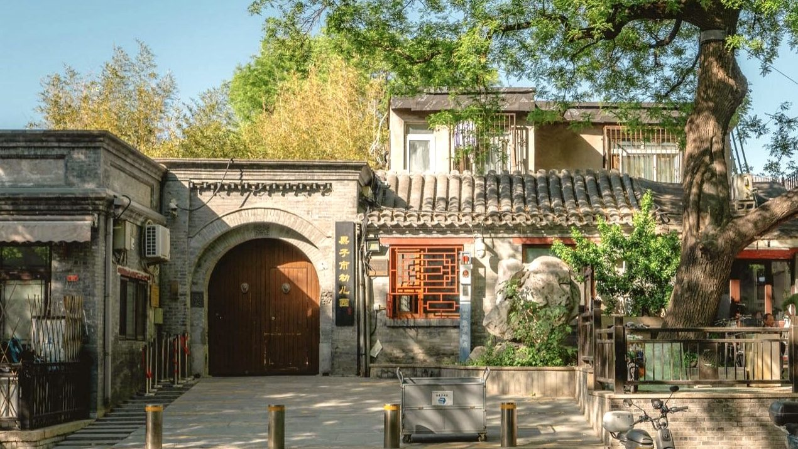
Day 2 Imperial Beijing
Through the Meridian Gate.
Into the Forbidden City with an expert English-speaking historian who reads the architecture like a text — six centuries of dynastic history brought to life hall by hall. The afternoon stays imperial: the overlook from Jingshan's peak, then the Summer Palace by boat as the light softens over Kunming Lake.
Forbidden City, privately guidedSummer Palace by boat
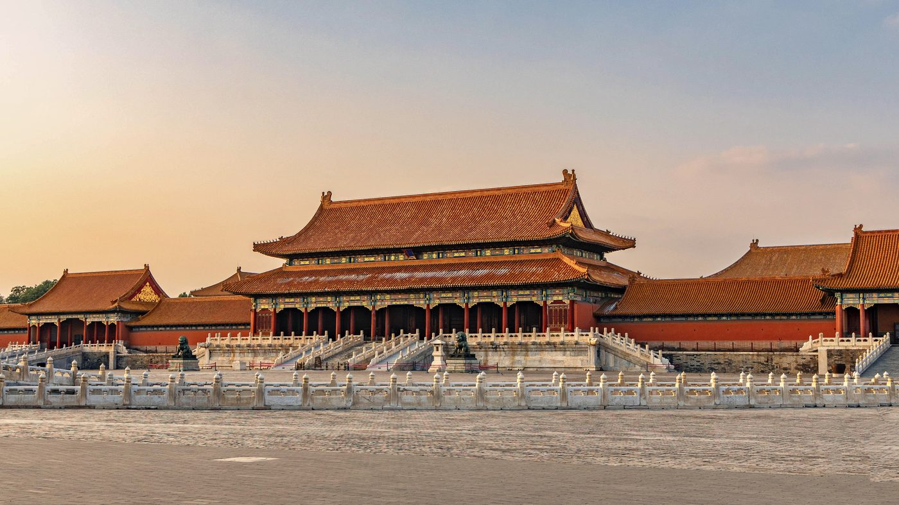
Day 3 Round One
Golf beneath the Great Wall.
The round the journey is built around. At Reignwood Pine Valley, Nicklaus fairways climb through the Jundu Mountains with the Wall tracing the ridgeline above the back nine — a closely-held private club where we arrange guest play on your behalf, with caddies, forecaddies and a quiet clubhouse lunch beneath the château's chandeliers.
Golf · Reignwood Pine ValleyClubhouse lunch
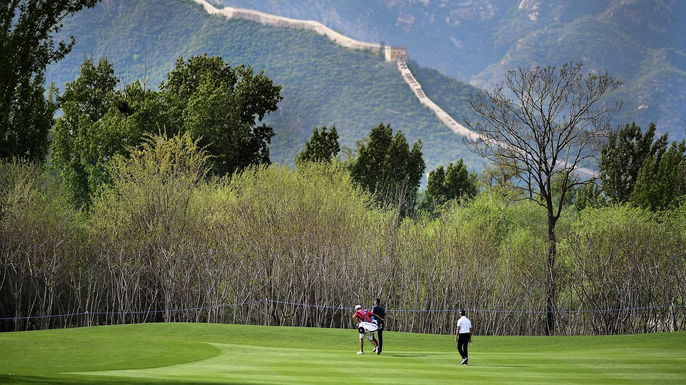
Day 3 The Great Wall
The Wall at Juyongguan, without the crowds.
Twenty-five minutes from your final putt, the Wall rides the mountain pass at Juyongguan. While the famous tourist sections fill with tour buses, years on the ground have taught us exactly which stretch to climb, and at which hour — ramparts all but to yourselves, the light going gold over the Jundu Mountains.
Great Wall · Juyongguan25 min from Reignwood
Day 4 Round Two
Lakeside golf beneath the Yanshan range.
A second morning of mountain golf, this time at Topwin Golf & Country Club on Yanqi Lake — the Woosnam course played by President Obama, its fairways running along the waters where the world's leaders gathered for the 2014 APEC summit. Back in the city by mid-afternoon with the evening free.
Golf · TopwinYanqi Lake
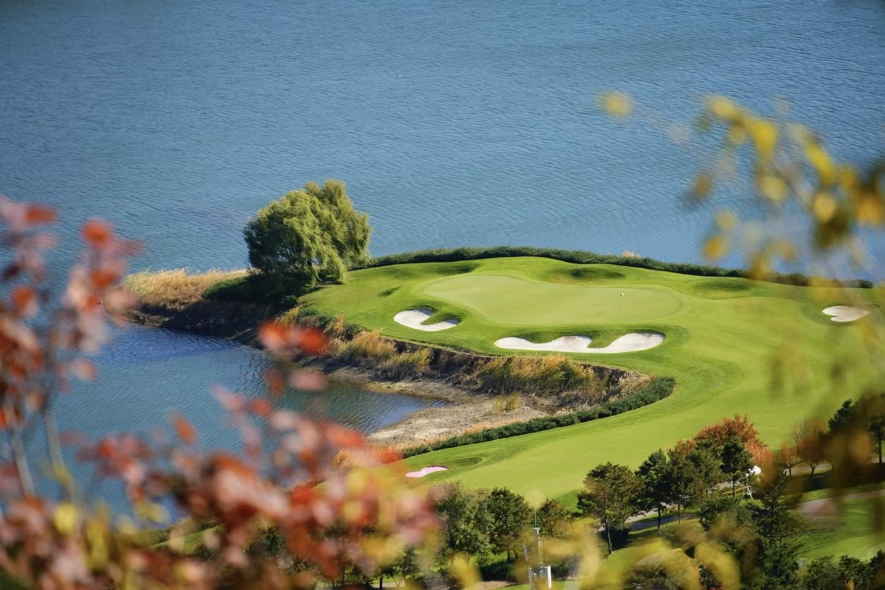
Day 4 Hutong Beijing
A hutong culture and food evening.
Back from the mountains, the rest of the day belongs to the grey-brick lanes where the capital actually lives: the alleys around the Drum and Bell Towers with the people who grew up in them, ending at one of the courtyard chef's tables Beijing's food-lovers keep to themselves.
Drum & Bell TowersCourtyard chef's table
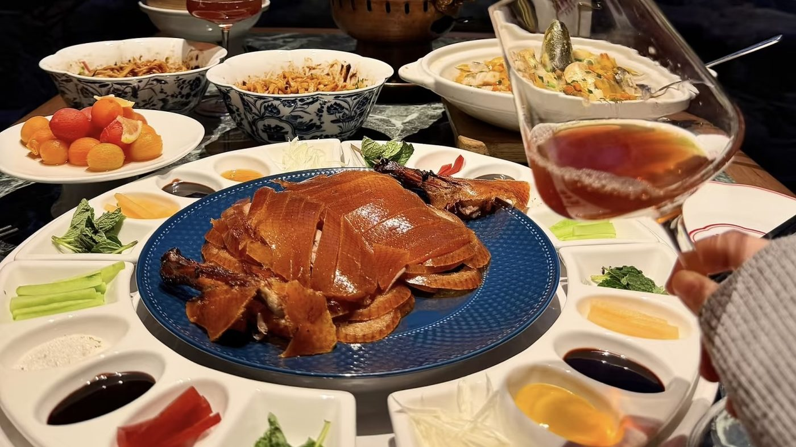
Day 5 Beijing → Shanghai
South, at 350 kilometres an hour.
A last unhurried morning — the Temple of Heaven at opening time, or nothing at all — then the business-class cabin of a high-speed train south. Four and a half hours later the skyline of Pudong rises over the Huangpu, and your hotel on the Bund is pouring the first drink of the second act. Dinner above the lights of two skylines.
High-speed rail, business classThe Bund after dark
An hour from the Bund, on Chongming Island, the trip's biggest surprise: Yangtze Dunes, a true links through native dunes and wetland, firm turf and river wind, ranked among China's top three modern courses. The world's busiest shipping lane glides past beyond the dunes. Evening among the plane trees of the old French Concession.
Golf · Yangtze DunesFrench Concession evening
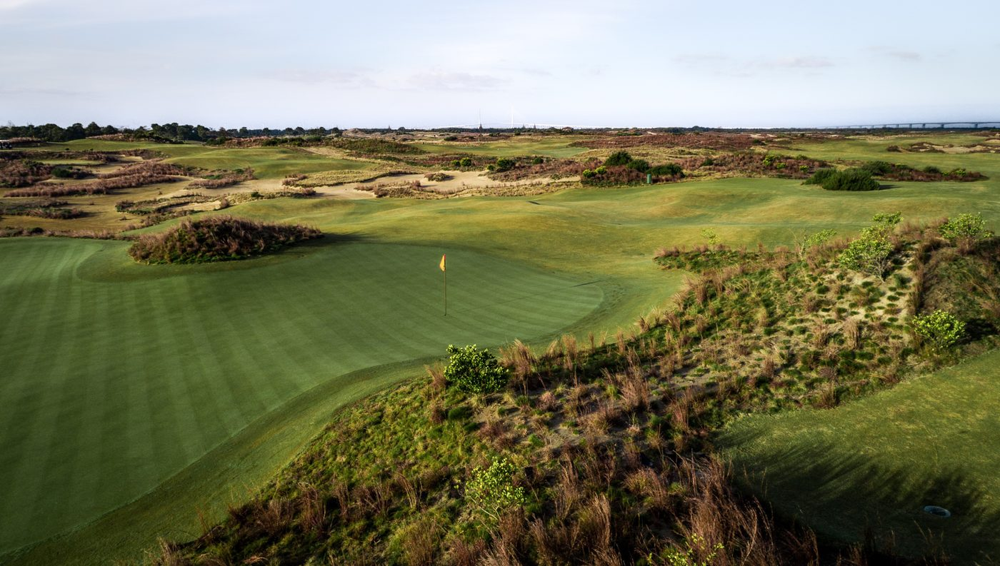
Day 7 Shanghai, Your Way
The city, arranged around you.
A day deliberately left open, then built to order: contemporary art in the West Bund museums, a tailor's fitting on the Bund, architecture from art-deco to the 632-metre Shanghai Tower, or simply the city's best kitchens back to back. We shape it in the weeks before you fly — or leave it gloriously empty.
Fully tailored day
Optional Add-On Tournament golf
A round at Sheshan International.
China's most famous course, and for two decades host of its flagship world-tour event — the closing stretch around the old quarry has decided more champions than any other holes in Asia. A strictly private members' club; we arrange your game, your caddies and lunch on the trophy terrace, woven into your Shanghai days.
A last Shanghai morning, then a short high-speed hop south into Jiangnan — the land "south of the river". By late afternoon you are on West Lake by private boat, mist on the water and the Leifeng Pagoda catching the last light, with dinner at a lakeside table the locals guard jealously.
High-speed rail, 1 hWest Lake by private boat
Day 9 Round Four
Golf through a tea plantation.
The closing round is the gentlest and the most unusual: Fuchun Golf Club, the only course in Asia routed through the rolling hills of a working Longjing tea plantation, its greens mirrored in still water below grey-tiled pavilions. Tea picked a few metres from the fairway follows the round; the evening is West Lake's.
Golf · Fuchun Golf ClubLongjing tea tasting
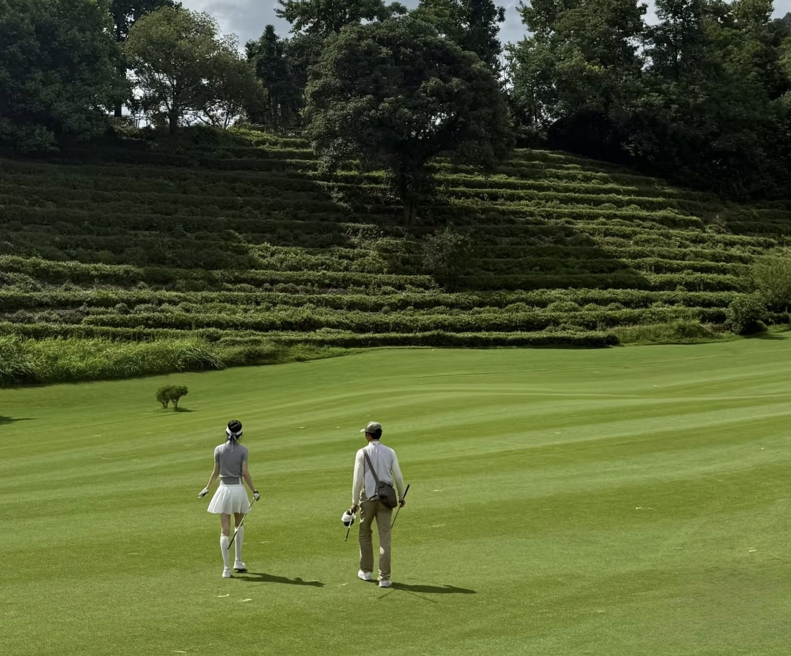
Day 10 Depart
Homeward — or onward.
Mist on the lake with a final breakfast, then a private transfer to Hangzhou's airport — or an hour back to Shanghai for your flight home. Or don't go home yet: Yunnan's snow-mountain fairways are three hours away by air, and Hainan's tropical coast waits at the end of a short flight south.
Swap a round for a garden, bring non-golfers, add a night at the foot of the Wall — every journey is rebuilt from scratch around your party before anything is booked.
Mountain golf beneath the Wall, lakeside fairways at Yanqi Lake, a wild river links and a course threaded through tea terraces — the strongest possible first hand of golf in China.
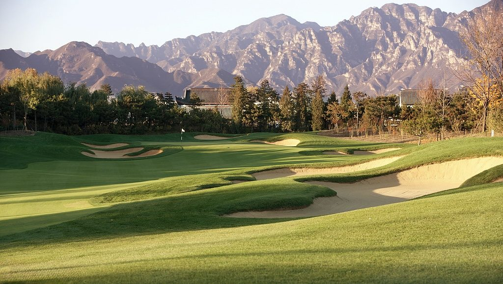
Round 1 · Signature
Jundu Mountains · Beijing
Reignwood Pine Valley
Set beneath the Great Wall near Badaling, Reignwood Pine Valley is one of China's most private and prestigious golf clubs — a Nicklaus mountain-parkland layout where elevated tees, sculpted bunkering and fast, guarded greens unfold below the Jundu Mountains, the Wall tracing the ridgeline above. Membership is closely held; we arrange guest play on your behalf.
Designer
Jack Nicklaus / Nicklaus Design
Setting
Great Wall mountain parkland
Standing
Asia Top 50 · Golf Magazine
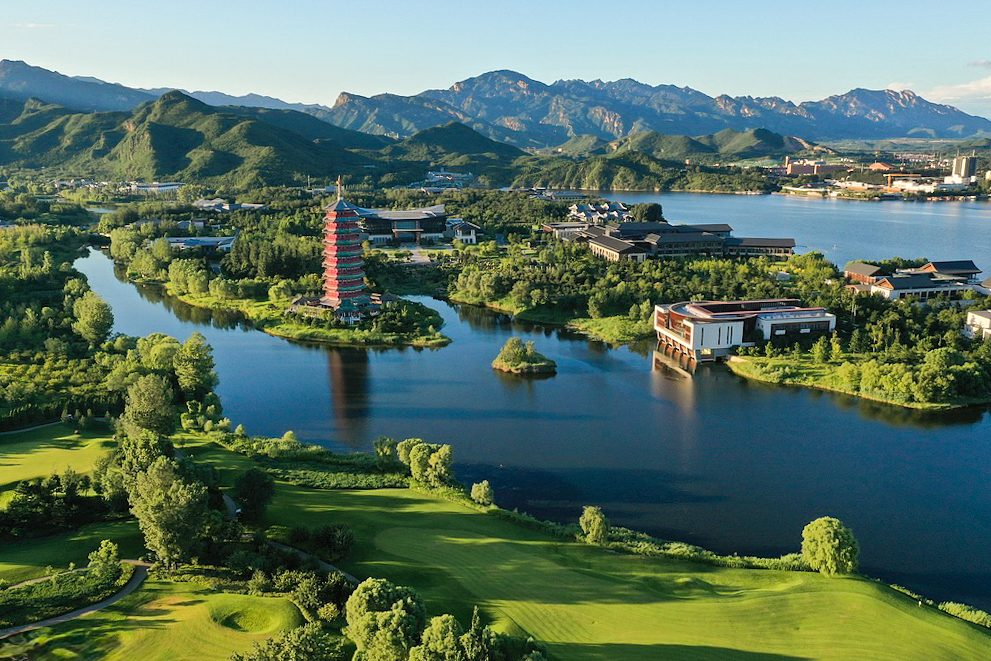
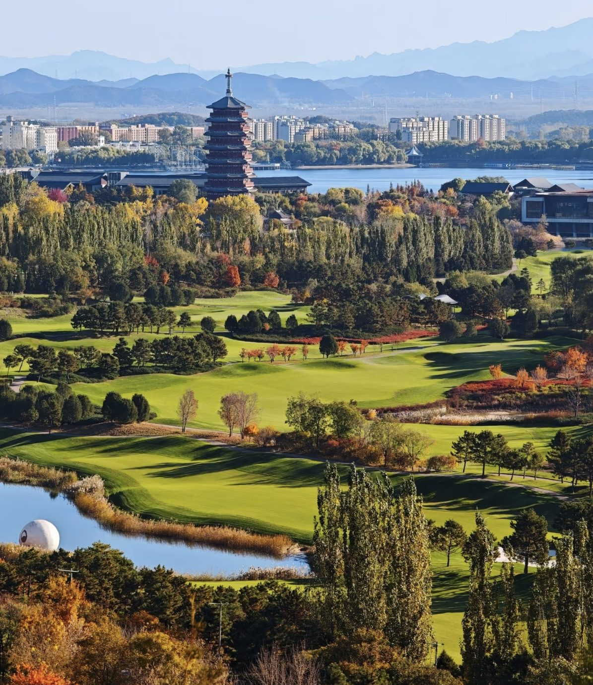
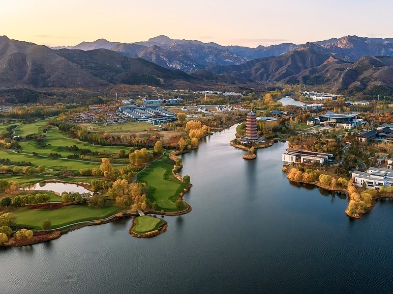
Round 2 · Lakeside
Yanqi Lake · Beijing
Topwin Golf & Country Club
One more morning in the mountains north of the capital: lakeside fairways beneath the Yanshan range, beside the waters where the world's leaders gathered for the 2014 APEC summit — President Obama among those to have played here. An Ian Woosnam design of generous, rolling parkland that turns gold in autumn, played before the city calls you back for your final hutong evening.
Designer
Ian Woosnam / IMG
Setting
Lakeside mountain parkland
How it fits
Morning round, Day 4
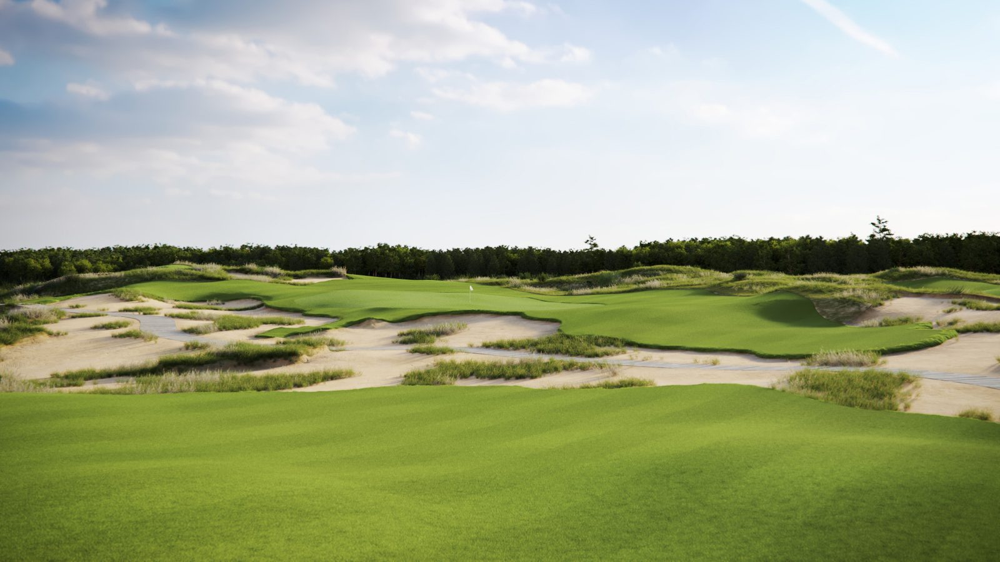
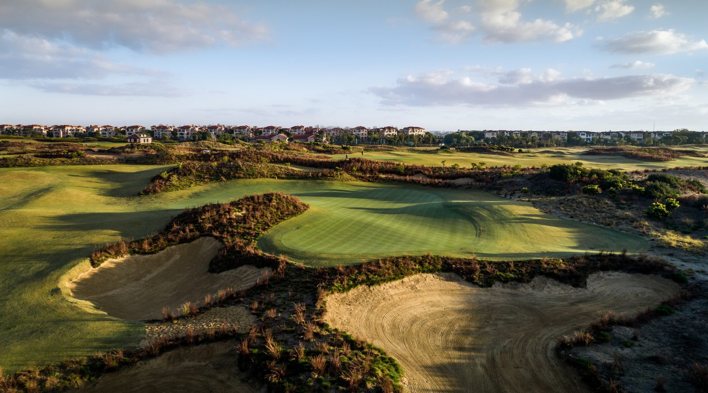
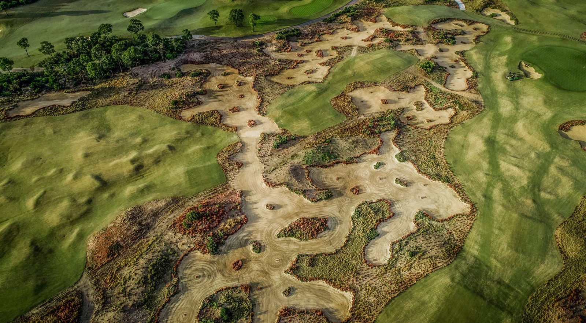
Round 3 · Wild links
Chongming Island · Shanghai
Yangtze Dunes
An hour from the Bund, on an island at the mouth of the Yangtze, lies the most surprising round in China — a true links running through native dunes and wetlands, shaped by the celebrated Australian firm OCM. Firm turf, river wind, blind shoulders and greens tucked into the sand: golf that feels closer to the Irish coast than to anything else in Asia.
Designer
OCM — Ogilvy, Cocking & Mead
Setting
Links through river dunes and wetland
Standing
China Top 3 · Golf Digest
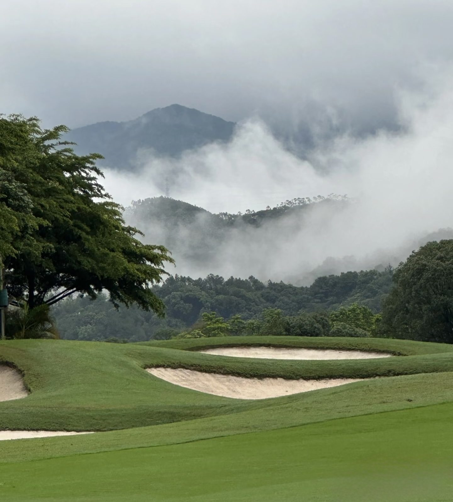
Round 4 · Tea plantation
Fuchun River Valley · Hangzhou
Fuchun Golf Club
Six hundred years ago the Fuchun valley inspired one of China's greatest paintings; today it holds the only course in Asia routed through the rolling hills of a tea plantation. Fairways sweep beneath terraced walls of Longjing tea, greens sit mirrored in still water below the resort's grey-tiled pavilions, and the mist comes and goes all morning. Golf found nowhere else in the game — the perfect closing note.
Designer
Daniel Obermeyer
Setting
Tea-plantation hills — the only one of its kind in Asia
How it fits
The closing round, Day 9
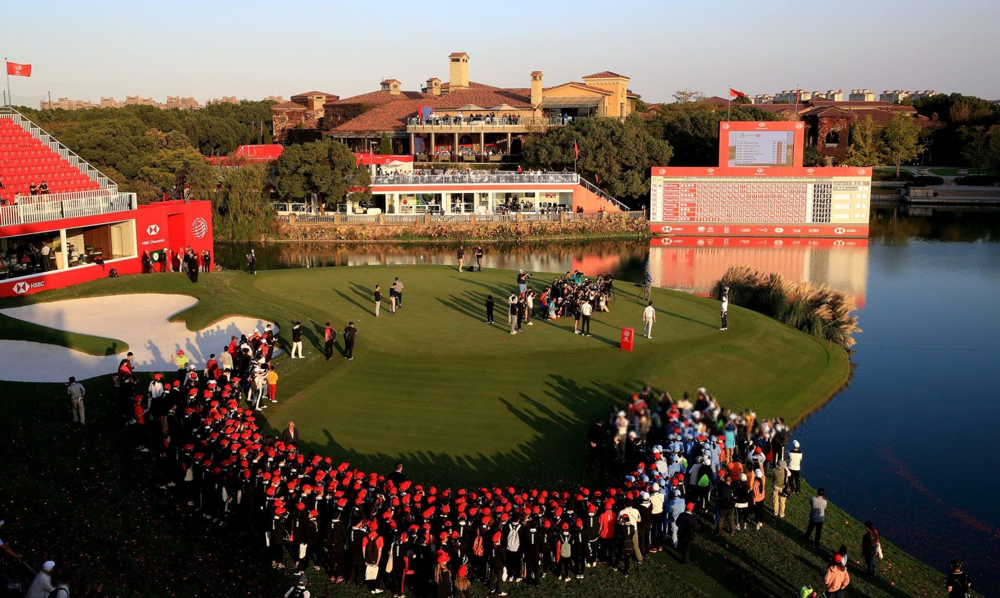
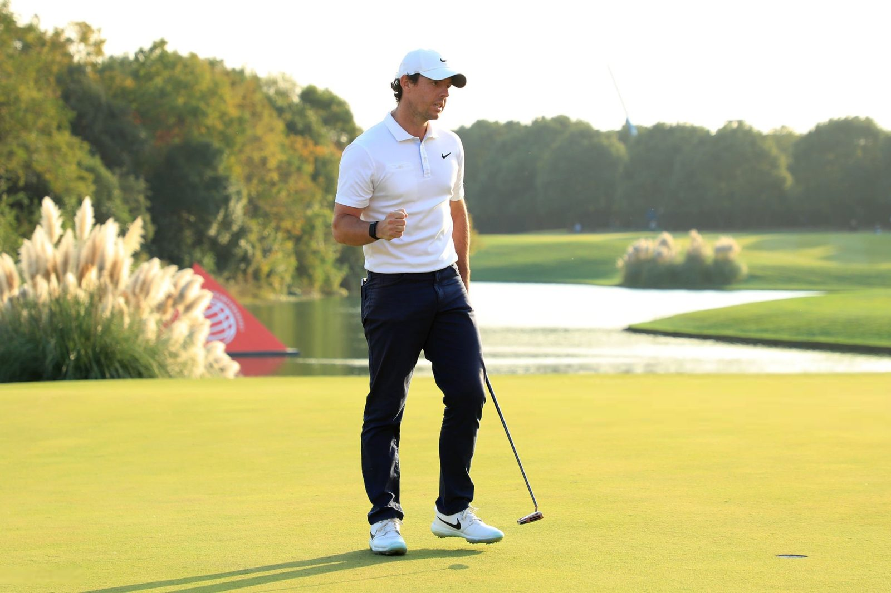
Optional · Add-On
Sheshan Hill · Shanghai
Sheshan International
For golfers who want tournament turf on the card: China's most famous course, and for two decades the host of its flagship world-tour event — Tiger Woods, Rory McIlroy and Phil Mickelson have all chased titles over the closing holes around the old quarry. A Nelson & Haworth parkland of mature camphors, strictly private; we arrange your game and lunch on the trophy terrace, woven into your Shanghai days.
Designer
Nelson & Haworth
Setting
Tournament parkland, quarry holes
Standing
World Top 100 · Golf Digest
All four rounds are confirmed before you fly — tee times, caddies and guest-play arrangements at the private clubs are handled entirely on your behalf, with clubs and shoes hired to spec if you'd rather travel light.
Where You Stay
Three addresses, three Chinas.
Four nights inside Beijing's oldest lanes, three above Shanghai's grandest waterfront, two among the tea terraces of the Fuchun valley — each hotel part of the journey itself.
Beijing · Nights 1–4
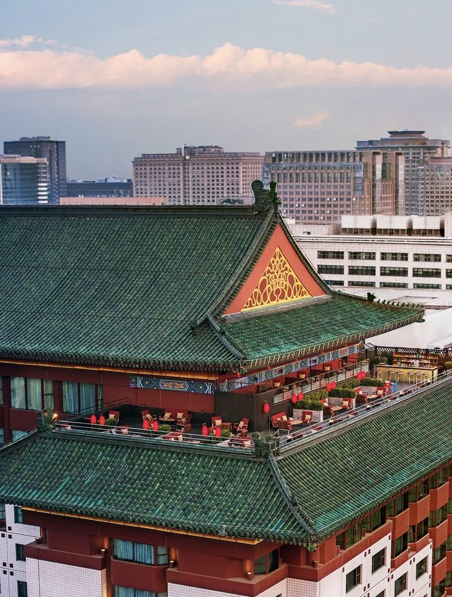
The Peninsula Beijing
Beijing, China
Shanghai · Nights 5–7
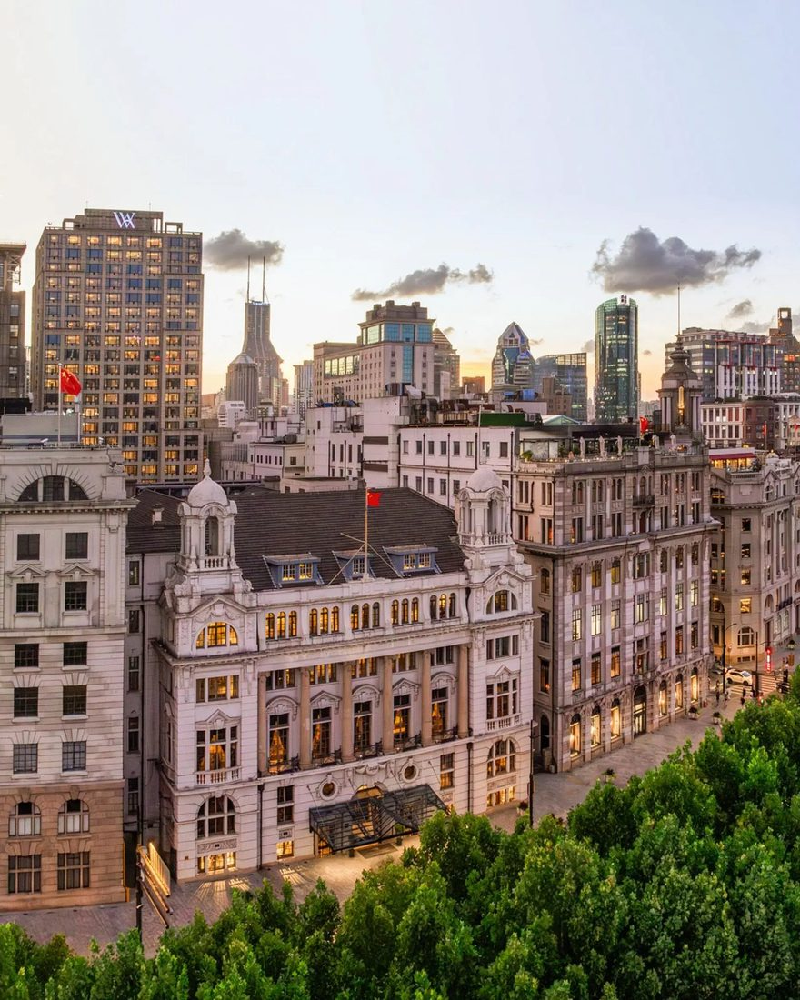
Waldorf Astoria Shanghai on the Bund
Shanghai, China
Hangzhou · Nights 8–9
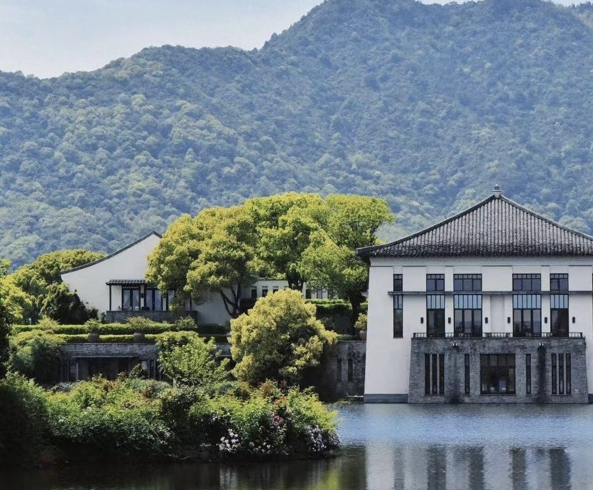
Fuchun Resort
Hangzhou, China
Prefer a hutong courtyard, a Pudong tower or a resort on West Lake itself? Room categories, alternatives and the level of comfort you choose are set out in your private proposal — every address booked entirely on your behalf.
Beijing, Shanghai and Hangzhou are the perfect first chapter — and the best-connected. Two natural extensions, each a short flight from where the journey ends:
Nine nights in hand-picked hotels, at the comfort level you choose
Four confirmed rounds — green fees, caddies and guest-play arrangements at private clubs
Private car, driver and English-speaking guide throughout all three cities
Business-class high-speed rail, Beijing to Shanghai and Shanghai to Hangzhou
Airport meet-and-greet with fast-track on arrival and departure
Daily breakfast and reservations at every table mentioned
A 24/7 on-the-ground concierge from first tee to final transfer
International flights, visa fees and personal expenses are not included. China now offers visa-free entry for many nationalities — we'll confirm what applies to you.
Priced From
US$7,950
per golfer
Based on two golfers travelling and sharing a room. Non-golfer companion pricing and preferred rates for private groups are available on request.